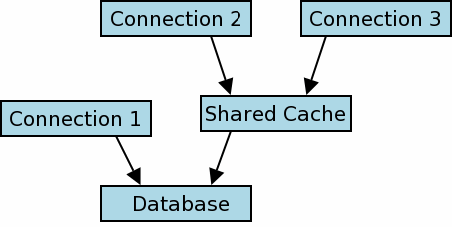

Choose any three.
|
|
1.0 SQLite Shared-Cache Mode
Starting with version 3.3.0, SQLite includes a special "shared-cache" mode (disabled by default) intended for use in embedded servers. If shared-cache mode is enabled and a thread establishes multiple connections to the same database, the connections share a single data and schema cache. This can significantly reduce the quantity of memory and IO required by the system.
Using shared-cache mode imposes some extra restrictions on passing database handles between threads and changes the semantics of the locking model in some cases. These details are described in full by this document. A basic understanding of the normal SQLite locking model (see File Locking And Concurrency In SQLite Version 3 for details) is assumed.
2.0 Shared-Cache Locking Model
Externally, from the point of view of another process or thread, two or more database connections using a shared-cache appear as a single connection. The locking protocol used to arbitrate between multiple shared-caches or regular database users is described elsewhere.
|  |
Figure 1
Figure 1 depicts an example runtime configuration where three database connections have been established. Connection 1 is a normal SQLite database connection. Connections 2 and 3 share a cache (and so must have been established by the same process thread). The normal locking protocol is used to serialize database access between connection 1 and the shared cache. The internal protocol used to serialize (or not, see "Read-Uncommitted Isolation Mode" below) access to the shared-cache by connections 2 and 3 is described in the remainder of this section.
There are three levels to the shared-cache locking model, transaction level locking, table level locking and schema level locking. They are described in the following three sub-sections.
2.1 Transaction Level Locking
SQLite connections can open two kinds of transactions, read and write transactions. This is not done explicitly, a transaction is implicitly a read-transaction until it first writes to a database table, at which point it becomes a write-transaction.
At most one connection to a single shared cache may open a write transaction at any one time. This may co-exist with any number of read transactions.
2.2 Table Level Locking
When two or more connections use a shared-cache, locks are used to serialize concurrent access attempts on a per-table basis. Tables support two types of locks, "read-locks" and "write-locks". Locks are granted to connections - at any one time, each database connection has either a read-lock, write-lock or no lock on each database table.
At any one time, a single table may have any number of active read-locks or a single active write lock. To read data a table, a connection must first obtain a read-lock. To write to a table, a connection must obtain a write-lock on that table. If a required table lock cannot be obtained, the query fails and SQLITE_LOCKED is returned to the caller.
Once a connection obtains a table lock, it is not released until the current transaction (read or write) is concluded.
2.2.1 Read-Uncommitted Isolation Mode
The behaviour described above may be modified slightly by using the read_uncommitted pragma to change the isolation level from serialized (the default), to read-uncommitted.
A database connection in read-uncommitted mode does not attempt to obtain read-locks before reading from database tables as described above. This can lead to inconsistent query results if another database connection modifies a table while it is being read, but it also means that a read-transaction opened by a connection in read-uncommitted mode can neither block nor be blocked by any other connection.
Read-uncommitted mode has no effect on the locks required to write to database tables (i.e. read-uncommitted connections must still obtain write-locks and hence database writes may still block or be blocked). Also, read-uncommitted mode has no effect on the sqlite_master locks required by the rules enumerated below (see section "Schema (sqlite_master) Level Locking").
/* Set the value of the read-uncommitted flag: ** ** True -> Set the connection to read-uncommitted mode. ** False -> Set the connectino to serialized (the default) mode. */ PRAGMA read_uncommitted = <boolean>; /* Retrieve the current value of the read-uncommitted flag */ PRAGMA read_uncommitted;
2.3 Schema (sqlite_master) Level Locking
The sqlite_master table supports shared-cache read and write locks in the same way as all other database tables (see description above). The following special rules also apply:
- A connection must obtain a read-lock on sqlite_master before accessing any database tables or obtaining any other read or write locks.
- Before executing a statement that modifies the database schema (i.e. a CREATE or DROP TABLE statement), a connection must obtain a write-lock on sqlite_master.
- A connection may not compile an SQL statement if any other connection is holding a write-lock on the sqlite_master table of any attached database (including the default database, "main").
3.0 Thread Related Issues
When shared-cache mode is enabled, a database connection may only be used by the thread that called sqlite3_open() to create it. If another thread attempts to use the database connection, in most cases an SQLITE_MISUSE error is returned. However this is not guaranteed and programs should not depend on this behaviour, in some cases a segfault may result.
4.0 Enabling Shared-Cache Mode
Shared-cache mode is enabled on a thread-wide basis. Using the C interface, the following API can be used to enable or disable shared-cache mode for the calling thread:
int sqlite3_enable_shared_cache(int);
It is illegal to call sqlite3_enable_shared_cache() if one or more open database connections were opened by the calling thread. If the argument is non-zero, shared-cache mode is enabled. If the argument is zero, shared-cache mode is disabled. The return value is either SQLITE_OK (if the operation was successful), SQLITE_NOMEM (if a malloc() failed), or SQLITE_MISUSE (if the thread has open database connections).